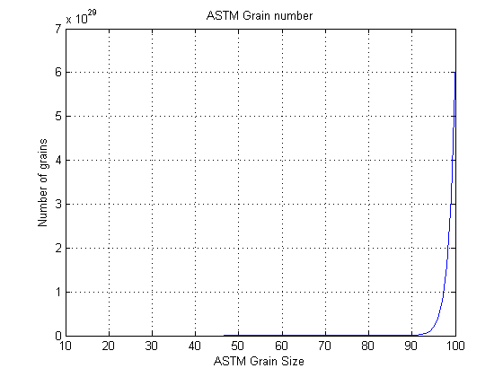
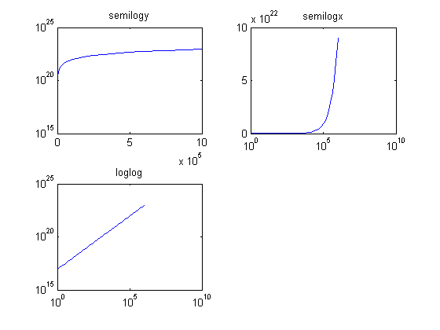
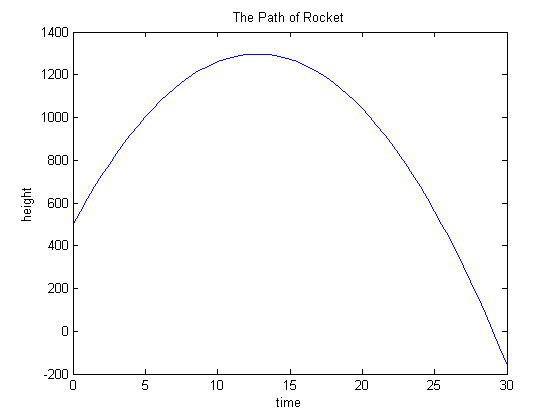
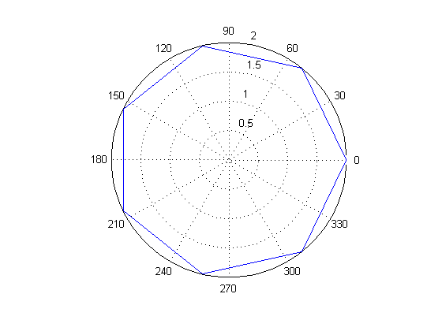
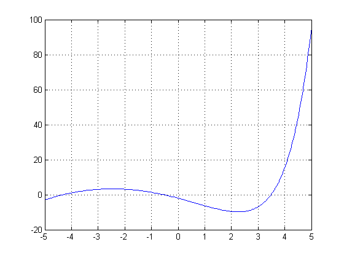
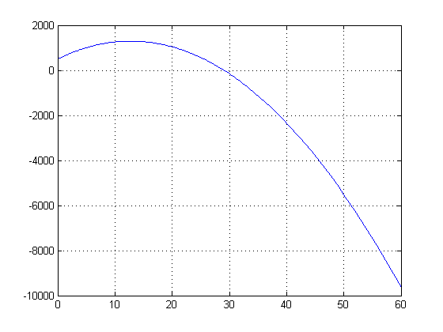

n = 10 : 100;
N = num_grains(n);
figure
plot(n, N)
title('ASTM Grain number')
xlabel('ASTM Grain Size')
ylabel('Number of grains')
grid
m = logspace(0, 6);
E = energy(m);
figure
subplot(2,2,1)
semilogy(m,E)
title('semilogy')
subplot(2,2,2)
semilogx(m,E)
title('semilogx')
subplot(2,2,3)
loglog(m,E)
title('loglog')
MV = [78.115 46.07 102.3];
m = 1:10;
[x,y] = meshgrid(m,MV);
n = nmoles(x',y');
disp(n)
MV = [78.115 46.07 102.3];
n = 1:10;
[x,y] = meshgrid(n,MV);
m = mass(x',y');
disp(m)
r = 1609.44.*[7926 4217];
h = 0.3048.*(0:1000:10000);
[x,y] = meshgrid(r,h);
d = distance(x',y');
disp(d)
t = 0:0.5:30;
h = height(t);
figure
plot(t,h)
title('The Path of Rocket')
xlabel('time')
ylabel('height')
[h_max,h_max_space] = max(h);
h_max_time = t(h_max_space);
disp(h_max_time)
figure
n = 7;
polygon(n)
addpath ('my_temp_conversion')
t_F = 0:10:200;
t_K = F_to_K(t_F);
t1 = [t_F',t_K'];
disp('F_to_K')
disp(t1)
t_C = linspace(0,100,25);
t_R = C_to_R(t_C);
t2 = [t_C', t_R'];
disp('C_to_R')
disp(t2)
t_C = 0:5:100;
t_F = C_to_F(t_C);
t3 = [t_C',t_F'];
disp('C_to_F')
disp(t3)
midu = 13560;
g = 9.8;
P = @(x) midu*g.*x;
Pa_to_atm = @(x) 101325.*P(x);
h = 0.5:0.1:1.0;
p = P(h);
patm = Pa_to_atm(h);
disp('Pa：')
disp(p)
disp('atm：')
disp(patm)
save my_p_function1 P
save my_p_function2 Pa_to_atm
my_function = @(x) -x^2-5*x-3+exp(x);
figure
fplot(my_function, [-5, 5])
grid
disp('函数最小值')
f_min = fminbnd(my_function, -5, 5);
disp(f_min)
height_handle = @(x) height(x);
figure
fplot(height_handle, [0, 60])
grid
disp('火箭返回地面所用时间')
time_zero = fzero(height_handle,30);
disp(time_zero)
temperature_conversions
0.0128 0.0217 0.0098
0.0256 0.0434 0.0196
0.0384 0.0651 0.0293
0.0512 0.0868 0.0391
0.0640 0.1085 0.0489
0.0768 0.1302 0.0587
0.0896 0.1519 0.0684
0.1024 0.1736 0.0782
0.1152 0.1954 0.0880
0.1280 0.2171 0.0978
1.0e+03 *
0.0781 0.0461 0.1023
0.1562 0.0921 0.2046
0.2343 0.1382 0.3069
0.3125 0.1843 0.4092
0.3906 0.2304 0.5115
0.4687 0.2764 0.6138
0.5468 0.3225 0.7161
0.6249 0.3686 0.8184
0.7030 0.4146 0.9207
0.7812 0.4607 1.0230
1.0e+05 *
Columns 1 through 7
0 0.8818 1.2471 1.5274 1.7637 1.9719 2.1601
0 0.6432 0.9097 1.1141 1.2865 1.4384 1.5757
Columns 8 through 11
2.3332 2.4943 2.6456 2.7888
1.7019 1.8195 1.9299 2.0343
13
F_to_K
0 255.3722
10.0000 260.9278
20.0000 266.4833
30.0000 272.0389
40.0000 277.5944
50.0000 283.1500
60.0000 288.7056
70.0000 294.2611
80.0000 299.8167
90.0000 305.3722
100.0000 310.9278
110.0000 316.4833
120.0000 322.0389
130.0000 327.5944
140.0000 333.1500
150.0000 338.7056
160.0000 344.2611
170.0000 349.8167
180.0000 355.3722
190.0000 360.9278
200.0000 366.4833
C_to_R
0 491.6700
4.1667 499.1700
8.3333 506.6700
12.5000 514.1700
16.6667 521.6700
20.8333 529.1700
25.0000 536.6700
29.1667 544.1700
33.3333 551.6700
37.5000 559.1700
41.6667 566.6700
45.8333 574.1700
50.0000 581.6700
54.1667 589.1700
58.3333 596.6700
62.5000 604.1700
66.6667 611.6700
70.8333 619.1700
75.0000 626.6700
79.1667 634.1700
83.3333 641.6700
87.5000 649.1700
91.6667 656.6700
95.8333 664.1700
100.0000 671.6700
C_to_F
0 32
5 41
10 50
15 59
20 68
25 77
30 86
35 95
40 104
45 113
50 122
55 131
60 140
65 149
70 158
75 167
80 176
85 185
90 194
95 203
100 212
Pa：
1.0e+05 *
0.6644 0.7973 0.9302 1.0631 1.1960 1.3289
atm：
1.0e+10 *
0.6732 0.8079 0.9425 1.0772 1.2118 1.3465
函数最小值
2.2516
火箭返回地面所用时间
29.0257
F_to_K
0 255.3722
10.0000 260.9278
20.0000 266.4833
30.0000 272.0389
40.0000 277.5944
50.0000 283.1500
60.0000 288.7056
70.0000 294.2611
80.0000 299.8167
90.0000 305.3722
100.0000 310.9278
110.0000 316.4833
120.0000 322.0389
130.0000 327.5944
140.0000 333.1500
150.0000 338.7056
160.0000 344.2611
170.0000 349.8167
180.0000 355.3722
190.0000 360.9278
200.0000 366.4833
C_to_R
0 491.6700
4.1667 499.1700
8.3333 506.6700
12.5000 514.1700
16.6667 521.6700
20.8333 529.1700
25.0000 536.6700
29.1667 544.1700
33.3333 551.6700
37.5000 559.1700
41.6667 566.6700
45.8333 574.1700
50.0000 581.6700
54.1667 589.1700
58.3333 596.6700
62.5000 604.1700
66.6667 611.6700
70.8333 619.1700
75.0000 626.6700
79.1667 634.1700
83.3333 641.6700
87.5000 649.1700
91.6667 656.6700
95.8333 664.1700
100.0000 671.6700
C_to_F
0 32
5 41
10 50
15 59
20 68
25 77
30 86
35 95
40 104
45 113
50 122
55 131
60 140
65 149
70 158
75 167
80 176
85 185
90 194
95 203
100 212
     